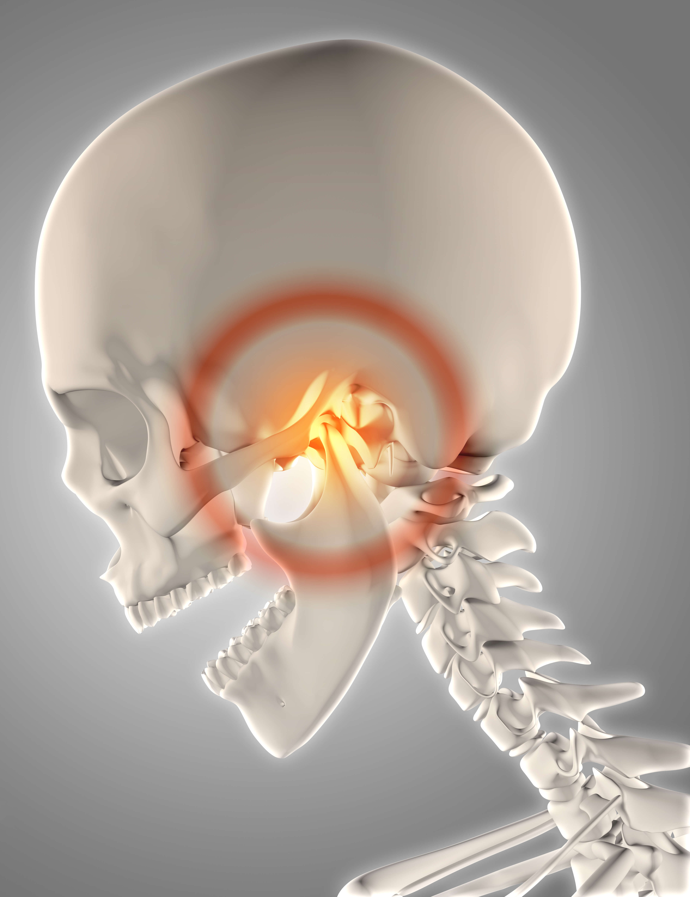

La oclusión y la Articulación Temporomandibular (ATM) se refieren a cómo encajan los dientes superiores e inferiores y al funcionamiento de la articulación que conecta la mandíbula con el cráneo. Una oclusión adecuada permite morder, masticar y hablar correctamente, mientras que una ATM en buen estado garantiza movimientos suaves y sin dolor.
Los beneficios de mantener una buena oclusión y una ATM saludable incluyen una masticación eficiente, menor desgaste de los dientes, mejor postura mandibular y reducción de dolores faciales, de cuello y de cabeza.
